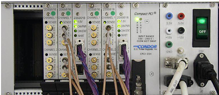

Illustration 2: ASC Chassis - Front View

Table 1: Circuit Board Parts Identification
| Slot Number | Board Name |
| 18 | Input Panel |
| 16 & 17 | Power Supply |
| 15 | UPM 1 Processor Board |
| 14 | UPM 1 NB RF Detector Board |
| 13 | UPM 1 BB RF Detector Board |
| 12 | UPM 2 Processor Board |
| 11 | UPM 2 NB RF Detector Board |
| 10 | UPM 2 BB RF Detector Board |
| 8 & 9 | NB Amp Interface Board |
| 6 & 7 | Opt. BB Amp Interface Board |